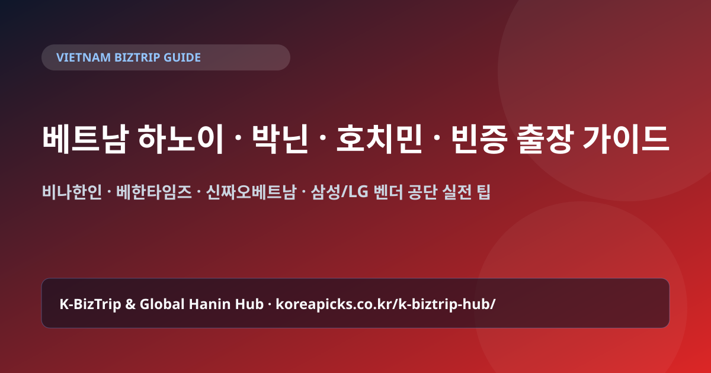

베트남 하노이·박닌·호치민·빈증 출장 & 한인 사이트 완벽 가이드 (2026)
Editorial Standard: K-비즈트립 & 한인웹 허브 에디토리얼 데스크 검증 · 최종 업데이트: · 실제 현지 한인 사이트 및 공단 출장 동선 기반 가이드

1. 북부(하노이·박닌·하이퐁) vs 남부(호치민·빈증·동나이) 출장 벨트 비교
| 권역 | 주요 도시 및 공단 | 주력 산업 | 한인 밀집/추천 숙소 |
|---|---|---|---|
| 북부 권역 | 하노이, 박닌(옌퐁), 타이응우옌, 박장, 하이퐁(딘부·짱주에) | 삼성전자·LG전자·전기전자·반도체·카메라모듈·PCB | 하노이 미딩(My Dinh) 한인타운, 박닌 시내 비즈니스 호텔 |
| 남부 권역 | 호치민, 빈증(VSIP), 동나이(비엔호아·연짝), 바리아붕따우 | 섬유·신발·철강·화학·식음료·IT·유통·물류 | 호치민 1군(비즈니스), 7군 푸미흥(한인타운), 빈증 미푹/투저우못 |
2. 베트남 3대 한인 포털 & 현지 메신저 Zalo(잘로) 활용
- 비나한인 (VinaHanin.com): 베트남 투자·공단 입주·법인 설립·현지 생활 및 통역/렌트카 정보가 총망라된 실전 포털입니다.
- 베한타임즈 (VietHanTimes.com): 베트남 정치·경제·노동법 개정 뉴스와 교민 사회 소식을 가장 깊이 있게 전달합니다.
- 신짜오베트남 (ChaoVietnam.co.kr): 호치민·하노이 한인 업소록, 식당, 병원, 물류 업체 디렉토리로 유명합니다.
또한 베트남 현지 바이어·공장 담당자·기사님들은 카카오톡보다 Zalo(잘로) 메신저를 압도적으로 많이 사용합니다. 출국 전 한국 번호로 Zalo를 가입해 두면 현지 도면·문서·위치 공유가 매우 빠릅니다.
3. 무비자 45일 vs E-Visa 90일 & 노이바이/떤선녓 공항 이동 팁
한국 여권 소지자는 베트남 입국 시 45일 무비자 체류가 가능하며, 45일을 초과하거나 잦은 입출국이 필요한 장기 설비 셋업 출장자는 90일 E-Visa(단수/복수)를 온라인으로 발급받을 수 있습니다.
하노이 노이바이 공항에서 박닌(옌퐁 공단)이나 타이응우옌 공단까지는 하노이 시내를 거치지 않고 고속도로로 35~45분이면 직행할 수 있으므로, 오전 도착 항공편이라면 공항 픽업 렌트카(7인승 카니발/이노바)로 공단 미팅을 먼저 마친 뒤 저녁에 하노이 미딩 숙소로 들어오는 동선이 가장 효율적입니다.
✈️ 🇻🇳 베트남 출장 준비 & 실시간 현지 게시판 바로가기
출장 항공권·비즈니스 호텔·현지 eSIM 비교와 함께, 현지 통역·전담 기사 섭외는 국가별 실전 게시판을 이용하세요.
자주 묻는 질문 (FAQ)
Q. 베트남 공단 출장 시 그랩(Grab)만으로 이동이 가능한가요?
하노이·호치민 시내에서는 그랩이 1~3분 내에 잡히지만, 박닌·하이퐁·빈증·동나이 외곽 산업단지 내부에서는 퇴근 시간대에 그랩 호출이 어렵습니다. 공단 방문 날에는 1일 기사 포함 차량(8~10시간 대절)을 이용하시는 것이 안전합니다.
Q. 베트남 출장 시 전압과 결제는 어떻게 준비하나요?
전압은 220V로 한국 전자제품 플러그를 어댑터 없이 그대로 꽂아 쓸 수 있습니다. 결제는 비자/마스터카드와 함께 소액 현금(베트남 동 VND) 또는 트래블월렛/트래블로그 카드를 준비하세요.